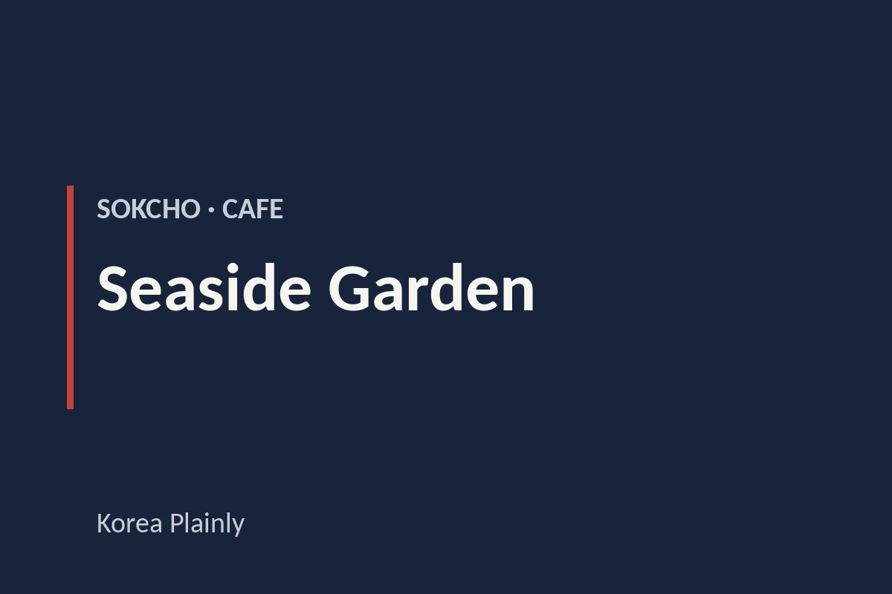

Sokcho · Cafe
Seaside Garden: A coastal café in Goseong
By Korea Plainly · Published

At a glance: Seaside Garden is a sea-view café on the Goseong coast, a relaxed stop for a drink and a break from sightseeing.
Visiting Seaside Garden
- Region
- Sokcho
- Address
- 23 Beorikkae-gil, Toseong-myeon, Goseong-gun, Gangwon-do
- Google rating
- 4.2/5 from 8,278 reviews (October 2026)
Opening hours, prices and closures change. Check the map before you go.
What Seaside Garden is
Seaside Garden is a café at 23 Beorikkae-gil in Toseong-myeon, Goseong-gun, Gangwon-do. It is often grouped into a Sokcho outing because Sokcho is the best-known nearby city for many visitors, but the address is in Goseong, just north of Sokcho. Keep that distinction in mind when arranging transport or entering the destination in a map app.
The appeal is simple: take a seat, enjoy a café break, and make time for the coast. The sea view gives the visit a different feel from a city coffee stop, while the unhurried setting suits a pause between drives or walks. Google gives the café a rating of 4.2 from 8,278 reviews, a sign of how popular it is with visitors to the area.
In Korea, cafés are often destinations in their own right, not just places to grab a takeaway drink. People come to talk, rest, and enjoy the setting, so there is no need to rush through your visit. Seaside Garden works well as a small part of a coastal day rather than as a sightseeing stop that needs a packed schedule.
What to see, do, and order
Let the shoreline set the pace. On a clear day, take a moment to look out toward the water and enjoy the change of scenery; on a windy or overcast day, the café can still offer a comfortable break from the elements. The view is a good reason to slow down rather than treat the stop as a quick coffee run.
Choose a drink or something to eat from the current menu, then settle in and enjoy the surroundings. Menus at Korean cafés can include coffee, tea, and other drinks, but the selection changes from place to place, so check the menu when you arrive. If you are visiting with someone, this is an easy spot to share a rest and decide what to see next.
As in many Korean cafés, you may find it useful to check whether you order at the counter or through another system when you enter. If you are unsure, point to the menu and ask; simple English may be understood, and a translation app can help with less familiar choices. Take care of your table before leaving, and follow any signs about returning trays or separating rubbish.
How to plan your visit
Allow about an hour for a relaxed café stop, with extra time if you want to linger. The best time depends on the kind of break you want: daylight makes it easier to take in the coastal scenery, while later in the day can be a pleasant pause after exploring. For sunset, check the season and weather rather than assuming the view will be clear.
Plan the café as part of a wider Sokcho-and-Goseong day. You could combine it with a coastal walk or a visit to a familiar Sokcho sight such as Sokcho Lighthouse Observatory or Sokcho Beach. These are separate stops, so leave room for the drive and any time you want to spend at each one. If Seoraksan is also on your itinerary, treat the mountain and the coast as distinct parts of the day rather than trying to rush through both.
For a smoother arrival, enter the full address—23 Beorikkae-gil, Toseong-myeon, Goseong-gun—into your map app and check that the pin is in Goseong, not central Sokcho. This is especially helpful if you are using a taxi or travelling by car. If you are relying on public transport, plan the route before setting out and allow time for the final leg to the café.
Good to know
Coastal weather can change quickly, so bring an extra layer if you plan to spend time outdoors before or after your café stop. A clear day can make the scenery more rewarding, but do not make the whole outing depend on perfect skies: the café can still serve as a comfortable rest during a coastal itinerary.
Check current hours and prices on Naver Map before you set out, especially if you are visiting outside the main daytime period. If your plans depend on a particular menu choice or facility, check the café’s official website as well.
FAQ
Is Seaside Garden in Sokcho?
It is in Toseong-myeon, Goseong-gun, Gangwon-do, north of Sokcho. Visitors often include it in a Sokcho-area outing, but use the full Goseong address when navigating.
What is Seaside Garden?
It is a café by the coast, a good place to pause for a drink and enjoy the seaside setting during a day around Goseong and Sokcho.
How long should I plan to stay?
About an hour is a sensible allowance for a relaxed café visit. Add time if you are pairing it with a walk or another stop along the coast.